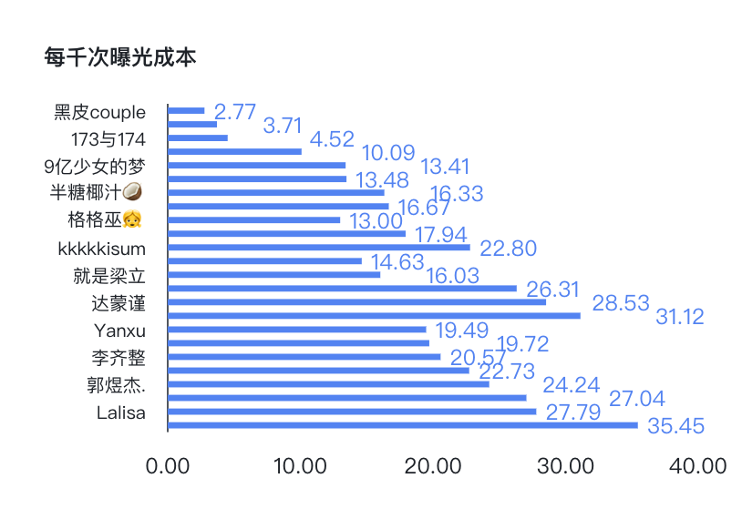
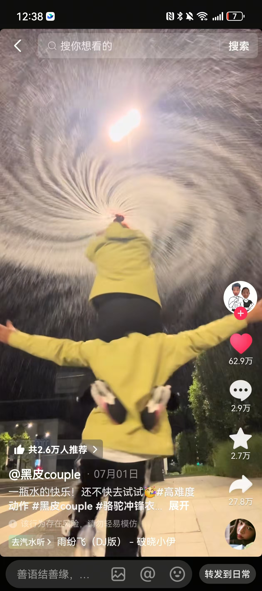
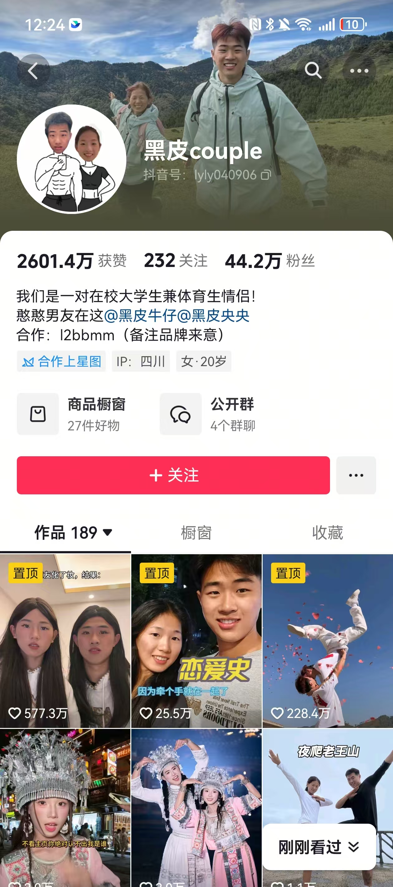
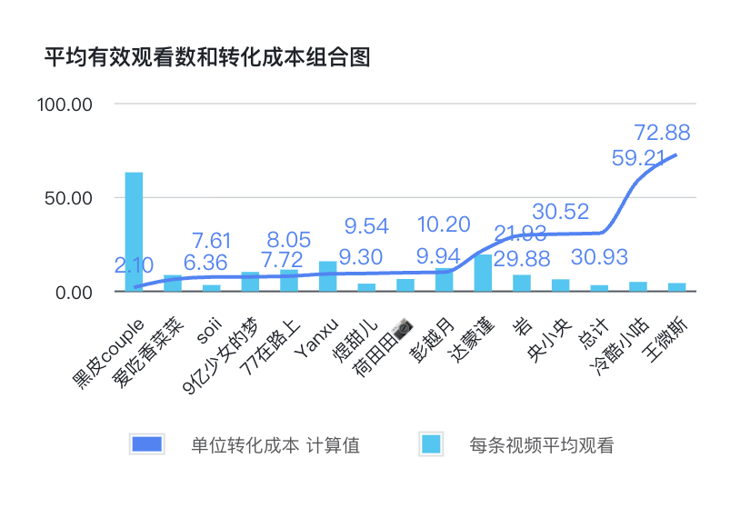
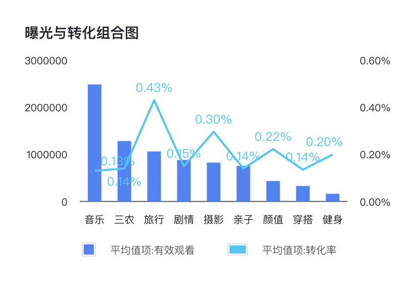
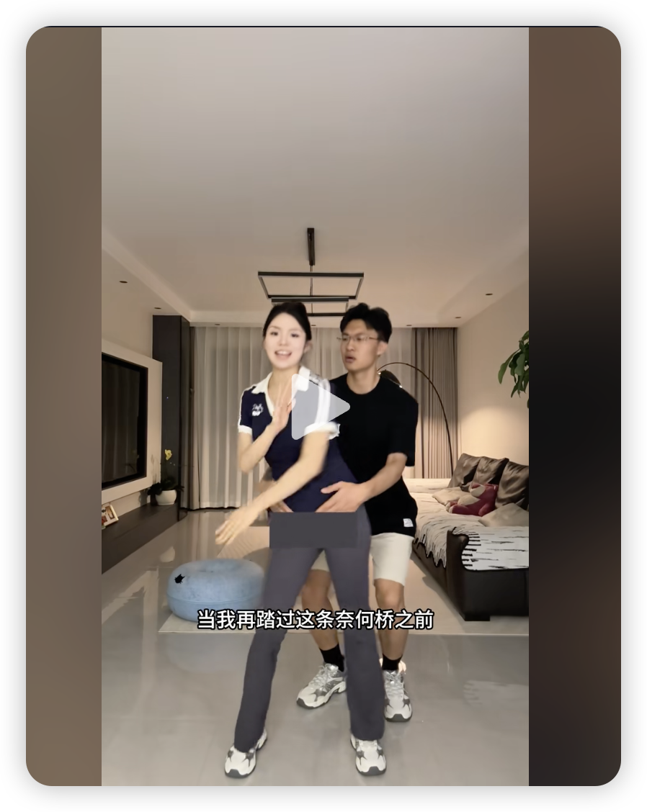
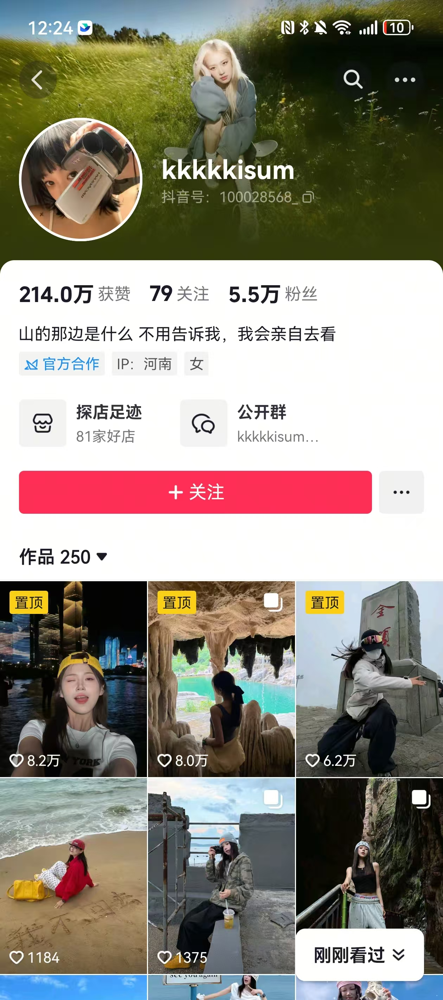

种草核心结论
从结果来看，无效种草率为 10%，而有效种草率仅为 72%，剩下 18% 的种草效果无法归类，需要进一步明确种草效果。
从 CPM（每千次曝光所消耗的成本，计算公式：有效观看 / 总成本 × 1000）看，有 59.06% 的达人 CPM 高于平均 CPM 37.59，存在进一步优化空间。
策略总结
- 从种草性价比角度，首选置换合作和低价博主（腰部），避免掉入高价大博主陷阱，可尝试合作更多素人高颜值博主，以量换价。
- 重点关注：音乐、旅行、摄影、三农、颜值赛道，淘汰二次元、测评赛道。
- 在种草性价比接近时，可以考虑选择内容强度大的博主或赛道。
种草效果数据盘点
| 维度 | 核心数据与结论 |
|---|---|
| 种草效果 | 骆驼种草规模（声量）约为 1.2 亿，约为同类竞品的 8 倍；间接转化人数为 14.5 万人，约为同类竞品的 50 倍。 |
| 性价比 | 骆驼种草单位成本为 30.93 元/人，仅是同类平均种草成本的 8%、第二名的 30%；种草转化率为 0.12%，超出竞品种草综合转化率 489%。在种草声量是同类 8 倍、转化数是同类 50 倍的基础上，成本仅为同类的 4 倍。 |
| 无效种草 | 骆驼无效种草率仅为 10%，处于户外类目 Top1。伯希和无效种草率为 67.6%，剔除伯希和后，同品类无效种草率为 13.38%，比同类低 3%。 |
| 消耗构成 | 骆驼达人种草视频数量 180 个，种草达人规模处于类目 Top1，对种草的重视程度处于行业领先。 |
| 品牌 | 有效观看数 | 间接转化人数 | 单位转化成本(元/人) | 转化率 | 无效种草率 |
|---|---|---|---|---|---|
| 骆驼 | 11903.5万 | 14.5万 | 30.93 | 0.12% | 10% |
| 安德玛 | 388.0万 | 0.3万 | 103.55 | 0.07% | ≈11%* |
| 伯希和 | 2746.5万 | 0.4万 | 573.56 | 0.01% | 67.6% |
| 凯乐石 | 1142.4万 | 0.2万 | 420.73 | 0.02% | ≈14%* |
达人分析与核心洞察
3.1 高性价比达人
1 相关定义及达人筛选
| 业务定义 | 在有效种草条件下，每千次曝光成本越低，达人性价比越高，反之，则越低。 |
| 指标定义 | 每 1000 次播放所消耗的成本 = 有效观看 / 总成本 × 1000 |
| 选择原因 | 在保障转化成本的前提下，可以直接满足投入更少的金钱，获得更高的品牌曝光，提高品牌声量与知名度。 |
| 选择标准（自定义） | 在只保留有效种草的情况下，筛选 CPM ≤ 37.59 的达人 |
| 标杆达人（前 3 位） | 黑皮couple、迟晓宇、173与174 |
2 图表展示

3 TOP 达人内容下钻分析
| 达人昵称 | CPM | 视频标题 | 视频链接 | 引流视频 | 主页 | 达人风格 | 好的原因分析 | 怎么做的更好？ |
|---|---|---|---|---|---|---|---|---|
| 黑皮couple （1条） |
2.77 | 一瓶水的快乐！还不快去试试🥳 #高难度动作 #黑皮couple #骆驼冲锋衣 #骆驼雨舞者 |
查看视频 ↗ |  |
 |
核心标签#体育生情侣（活力满满，生活化，笑容洋溢）；CP 形象，营造幸福的一对。粉丝画像推测年龄 18-30 岁，喜欢看恋爱日常、运动娱乐的年轻群体；兴趣：运动、旅行、搞笑；消费心理更注重日常生活、功能性，看重性价比。 | 成功点情绪价值高，CP 互动，运动感互动感和笑容饱满；高难度动作和炫酷的技巧；无明显广告植入，展现更日常。转化高的潜在原因博主调性与运动、户外更贴近，粉丝真实度和粘性更高，粉丝群体与骆驼性价比潮流形象贴近；生活化展示，洒水暗示冲锋衣防水特性。 | 内容上：多点互动内容，增添场景化剧情。视觉上可选择旅行、山河湖泊的背景，在晴天的白天拍摄。评论区引导：多些品牌展示，引导骆驼品牌展现，如"穿搭好美，什么品牌的"。 |
| 迟晓宇 （1条） |
3.71 | 我看看能不能到30达布溜 #迟晓宇 #盗将行dj #一学就会系列 #骆驼追寻2代 #骆驼慢跑鞋 |
查看视频 ↗ |  |
 |
核心标签生活化美女，ootd 日常展示；笑容、娱乐、动感引导。粉丝画像推测年龄：18-35 岁，偏好高颜值、氛围感内容，男性占比高；兴趣：美女、穿搭；消费心理：更注重情绪价值的满足。 | 生活化展示，在小区中跳舞更贴近日常生活，富有动感的舞步带上洋溢的笑容活力满满；穿搭适配且吸睛，上身浅色短袖配上灰色运动短裙再搭配白色运动鞋，符合当下审美时尚潮流。 | 转化引导优化适当增加品牌露出，如加入鞋子特写展示；评论区引导骆驼品牌关注。 |
| 173与174 （1条） |
4.52 | 有点暧昧了 #艾玛摇4 #抖音潮流舞蹈大赛 #骆驼登山鞋 #骆驼昆仑山 |
查看视频 ↗ |  |
 |
核心风格标签双美女 CP 与传统 CP 的反差，协调的互动与动感舞蹈；性感穿搭、比心和笑容给人一种易接近的感觉；生活化场景。粉丝画像推测人群：25-40 岁，爱看美女、娱乐互动的人群；兴趣：美女、颜值。 | 性感美女在线跳舞，CP 价值互动，给人美和潮流的感觉；生活化、日常化，舞蹈房 CP 日常无明显营销植入；依靠大众喜欢娱乐、爱美的天性自然流量高。 | 多点品牌展示，无意间露出品牌 logo，或更注重鞋子展现；带骆驼品牌话题，评论区往鞋子去引导。 |
4 策略总结
核心理念："骆驼，自然的一部分"——强调产品与自然环境的和谐共生，弱化商业感，强化情感共鸣，进一步提升与品牌的契合度。
| 优化方向 | 具体策略 |
|---|---|
| 内容方向优化 |
|
| 视觉与情绪设计 |
|
| 用户互动策略 |
|
| 品牌差异化锚点 |
|
3.2 大规模且跑赢均值的达人
1 相关定义及达人筛选
| 定义 | 达人单位转化成本 < 30.93 且 达人有效观看、转化率均高于均值 |
| 衡量标准 | ① 达人单位转化成本 = 总成本 / 间接转化人数 < 30.93（平均单位转化成本） ② 有效观看、转化率大于均值 *注：本次计算并未剔除报价为 0 的达人，报价为零的达人的达人加热成本即为总成本。 |
| 选择原因 | ① 性价比高，用更低的成本转化更多的用户 ② 视频质量好，有效观看、转化均高于均值 |
| 选择标准（自定义） | ① 达人单位转化成本 = 报价 / 间接转化人数 < 30.93 ② 筛选有效观看大于均值的达人后再筛选转化率大于均值的达人，最后升序排列，选择前 3 名达人。 |
| 标杆达人（前 2 位） | 黑皮couple、爱吃香菜菜、soil （黑皮couple在之前已有过展示，本次就只展示爱吃香菜菜和soil） |
2 图表展示

3 TOP 达人内容下钻分析
| 达人昵称 | 达人单位转化成本（元/人） | 达人粉丝数 | 视频标题 | 视频链接 | 引流视频 | 主页 | 达人风格 | 好的原因分析 | 怎么做的更好？ |
|---|---|---|---|---|---|---|---|---|---|
| 爱吃香菜菜 （3条，取转化最高的一条分析） |
6.36 | 8.3 万 | 就这个冲锋衣 爽！ #扫腿舞挑战 @骆驼户外官方旗舰店 #骆驼冲锋衣 #骆驼极境冒险家冲锋衣 |
查看视频 ↗ |  |
 |
博主核心标签情侣 CP、恋爱氛围：视频以举高高为主，烘托男友力 Max，搭配甜美的笑容营造一种恋爱的甜蜜感。半素人情侣博主：账号无 MCN 标签，视频无明显商业气息，以隐形品牌植入为主，如添加骆驼品牌话题、穿骆驼品牌衣服。粉丝画像推测目标受众：18-25 岁年轻群体（学生/初入职场的 Z 世代），偏好浪漫、甜蜜的高质量 CP 互动、恋爱日常。 | 甜蜜感：甜蜜的笑容配合男友的托举营造一种浪漫的氛围；无明显广告植入，仅以穿搭品牌衣服为主，日常氛围无商业气息；粉丝真实且画像与品牌年轻化的形象契合。 | 一、内容升级增加互动，并展现安全感、陪伴感；夜晚进行柔和补光，或在光线较清晰的氛围下拍摄，使人物面部表情、品牌服饰展现更清晰。二、转化优化增加骆驼品牌曝光，logo 在画面中的占比，让人一眼就能识别出来品牌。 |
| soli （二条，取转化最高的一条分析） |
7.61 | 60.5 万 | 多少次跌倒在路上 #西北 @青海初遇旅行 #骆驼追寻2代 #骆驼慢跑鞋 |
查看视频 ↗ |  |
 |
博主核心标签大自然的旅行者：很自然的展现，游客照的形式突出旅行那轻松、惬意的氛围；山川河流的背景，展现自然之美。氛围感美女、摄影达人（张张出片）。粉丝画像推测核心人群：20-30 岁热爱自然、旅行、徒步的年轻群体；消费心理：为潮流买单、身份认同感，能出片的衣服就是好衣服。 | 高颜值团队、年轻化群体，给人年轻活力的感觉，一种生活的向往；大自然、随意的游客照形式的展现，广阔的大地与湛蓝的天空，给人一种诗和远方的意境；出片效果 Max，成为朋友圈游客照标配模版，跟风拍摄。 | 核心方向：深化「沙漠诗人」人设，打造情绪种草标杆一、内容升级视频化动态化，可以采用旅行 vlog 的形式记录旅行日常，或摆脱静态摆拍、动态抓拍，给照片一种动感，如跑步的姿态、登山的抓拍；团队中增加一点互动感，给人一种和朋友一起旅行的欢快氛围；更多采用山地、徒步、森林的照片，更贴近骆驼登山徒步的场景应用；其他团队也随机穿搭骆驼品牌服饰，营造一种年轻化户外潮流穿搭的印象。二、转化优化评论区轻量化引导文案，露出骆驼品牌，塑造潮牌形象。 |
4 策略总结
核心理念："用自然之力，唤醒探索本能"——通过动态视觉与自然场景的结合，让产品成为自由探索的象征，进一步吸引眼球。
| 优化方向 | 具体策略 |
|---|---|
| 内容方向优化 |
|
| 视觉与情绪设计 | 恋爱 CP 达人：光线与氛围的「甜蜜分层」——选取黄昏场景，用暖金色逆光拍摄托举瞬间，让骆驼情侣装面料在逆光下呈现柔和光泽，人物周围营造 "光晕感"，强化 "浪漫温暖" 的情绪。 旅行达人：动态化呈现，运用镜头语言的「互动引导」——选取山地场景，用 "跟拍 + 呼吸感运镜"（镜头随达人行走轻微晃动），捕捉骆驼冲锋衣被风吹动的动态，搭配 "风声 + 登山杖触地声"，强化 "探索挑战" 的情绪，让观众从视、听觉沉浸自然，感知品牌装备的 "场景适配力"。 |
| 用户互动策略 | 情侣 CP 类达人
自然旅行者类达人
|
| 品牌差异化锚点 |
|
内容方向洞察
1 相关定义及达人筛选
| 高曝光高转化达人类型 | |
| 定义 | 根据达人类型，筛选出转化率高于平均值的，后对有效观看进行降序排列。 |
| 衡量标准 | 对达人类型打标，对达人类型进行聚合后，筛选出高于平均转化率的达人类型后，对有效观看进行排序，筛选出观看前三的达人类型。 |
| 选择原因 | ① 高于平均的转化率确保了视频的种草转化效果 ② 高有效观看的类型能最大程度的提高品牌曝光量，提升品牌声量与品牌影响力。 |
| 选择标准（自定义） | 对达人类型打标，对达人类型进行聚合后，转化率 ≥ 0.13%，根据平均有效观看取前二类达人 *注：为避免投入成本和条数对观看的影响，所以转化率、有效观看均采取均值作比较（当前类型下平均每条视频有效观看），且本次数据已去除无类型达人。 |
| 标杆达人（前 2 类） | 音乐、旅行 注：三农由于只有一个达人一条视频，且平均曝光与旅行相差不大，但转化率旅行类达人远超三农，故优选旅行类达人。 |
2 图表展示

3 TOP 达人内容下钻分析
| 达人类型 | 转化率与有效观看 | 达人昵称 | 视频标题 | 视频链接 | 引流视频 | 主页 | 达人风格 | 好的原因分析 | 怎么做的更好？ |
|---|---|---|---|---|---|---|---|---|---|
| 音乐 （1条） |
平均有效观看：248 万 平均转化率：0.13% |
彭越月 | 解锁新人物靳保镖 #梓渝摇来了 #求佛dj #康复运动 #骆驼登山鞋 #骆驼太行3代 |
查看视频 ↗ |  |
 |
博主核心标签早婚的美女博主；婚后夫妻日常：家庭日常、亲密互动；向往自由爱好音乐、声优博主。粉丝画像推测核心人群：20-30 岁女性，喜欢户外、已婚 00 后、喜欢音乐；爱好：流行音乐，为兴趣和情绪买单。 | 流行音乐配动感舞蹈，运动感、潮流感十足；丈夫入镜亲密互动，抱起给人一种力量感和安全感；温馨豪华简约的室内装修，搭配青春少女，营造一种惬意、温馨、富足自在的生活环境。 | 一、内容升级场景拓展，户外 + 音乐 + 舞蹈结合，可选择广阔的公园、广场舞类型，打青年广场舞形成反差；互动升级，如男生并没有把女生抱起，反而加入，进行双人互动热舞。二、转化引导优化置顶评论："很多问防晒衣的宝，是骆驼XXXX系列，主页'拍照穿搭'合集有同款～" |
| 旅行 （2条，选择较高转化的进行下钻） |
旅行综合转化率：0.43% 此条转化率：0.682% |
kkkkkisum | 你的脚步流浪在天涯 #草原 #川西美景 #屌丝 |
查看视频 ↗ |  |
 |
核心标签#氛围感美女（静图 + BGM，强调视觉美感与情绪共鸣）；#户外治愈风（绿色草原、自然光线，传递自由、生命力）；#轻文艺穿搭（不硬核种草，通过场景和音乐传递产品调性）；#BGM驱动（歌曲《你的脚步流浪在天涯》强化流浪、远方感，契合户外鞋主题）。粉丝画像推测年龄：18-35 岁，偏好高颜值、氛围感内容，女性占比可能较高；兴趣：旅行摄影、文艺穿搭、轻户外生活方式；消费心理：更注重"产品是否能融入理想生活场景"，而非纯功能导向。 | 成功点强情绪共鸣：BGM + 草原场景唤醒"逃离城市""自由流浪"的向往，间接关联老爹鞋的"户外陪伴"属性；高审美价值：静图构图精致，符合抖音"视觉系种草"趋势，易吸引停留；软性植入：不直接推销，而是让产品成为"理想生活"的一部分，降低广告抵触感。转化高的潜在原因目标用户（文艺青年、轻户外爱好者）与骆驼老爹鞋的"休闲户外"定位高度契合；静图展示鞋款侧面/背面（如踩在草原上的特写），突出设计感而非功能，更吸引女性用户。 | 一、内容升级强化产品细节：拍雨天和大晴天，骆驼遮风挡雨；在静图中加入 1-2 张功能性展示，如鞋底防滑纹特写（保持美感）。传播扩散策略BGM 裂变：发起挑战 #带着骆驼去流浪，鼓励用户用同款 BGM 拍旅行照 @品牌；头部评论引导："点击下方音乐拍同款，有机会被翻牌哦～"。二、转化引导优化评论区置顶：结合 BGM 歌词引导——"'流浪天涯'的每一步，都需要一双舒服的老爹鞋👟→ 点我首页有同款" + 购物车链接；发起互动提问："你最想穿这双鞋去哪流浪？抽 1 人送骆驼登山袜"。视频内轻植入：在静图切换间插入 0.5 秒字幕"骆驼老爹鞋｜旅行穿搭神器"（不破坏氛围）；结尾加动态镜头：模特回头微笑 + 鞋子特写，搭配字幕"陪你去远方"。 |
4 策略总结
核心理念："用自然之力，唤醒探索本能"——通过动态视觉与背景音乐和自然场景的结合，让产品成为自由探索的象征，进一步吸引眼球。
| 优化方向 | 具体策略 |
|---|---|
| 内容方向优化 | 1. 聚焦真实户外场景
2. 叙事模式创新：采用「打破-重建」叙事
|
| 视觉与情绪设计 | 视觉升级：打造「动态自然美学」
|
| 用户互动策略 | 1. 挑战赛运营
2. UGC 内容引导
|
| 品牌差异化锚点 |
|
5 延伸
转化率并非唯一衡量指标，在关注转化率的同时，同时可以考量间接转化人数，在这两个指标的加持下，生活、颜值博主也可以被重点关注。所以种草评估的指标与方法都是可以由自己定义口径的！大家发散思维，进行延伸即可～